| Mirror | A mirror is used to reflect light by 90 degrees. It has only one reflective site. |
| Double Mirror 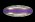 | Almost the same as a mirror except it is reflective from two sides. It can be used to turn two seperate beams from either side. |
| Slit Double Mirror 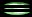 | Exactly the same as a double mirror except it has a hole through it's middle so a beam can pass through it going across. |
| Refractor 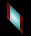 | A refractor is a used to refract light by 45 degrees. |
| Splitter 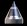 | A splitter splits a beam into two distinct new beams firing off at 90 degree angles. |
| Angled Splitter / Merger 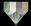 | This piece is similar to a splitter except that the split makes two new beams firing off at 45 degree angles. Unlike the splitter this piece allows you to merge beams together. |
| One Way 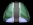 | This piece only allows a beam to go through it in one direction. |
| Prism | This is probably the most complex piece in LightQ. It is used to split light into it's component colors. It can also mergle light together. The angles used to merge light are very specific and must be the exact opposite angles used when splitting the light out. The Prism can double as a mirror for blue light, a refractor for green light, but has no bending properties for red light. |
| Polarizer 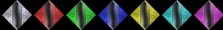 | Light can only pass through these in the direction of the slit. |
| Filter 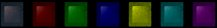 | These are used to fliter out all but certain colors. A yellow filter filters out blue allowing red and green (or yellow) to pass through it. |
| Color Converter 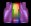 | This piece can be used to change the color of a beam of light. For instance, you could use it to change a blue light to a red light or a green light. |
| Coin | You must make all of these spin in order to solve the puzzle. The black coin only spins when no beam is passing over it. |
| Laser 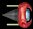 | This is the piece which fires out the beam of light. |
| Rotating Laser 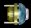 | Same as a laser except the player can rotate it. |
| Moving Objects | |
| Mines 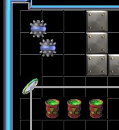 | Mines bounce off light beams and light can be used to contain them. Mines will also bounce off all other objects like walls or mirrors. They are harmless unless they hit Exploding Barrels which they will trigger. Most mine levels force the player to keep the mines contained, one way or another, while they move the other pieces and try to hit all the coins. Unlike other levels these solutions can't be shown by looking at the final picture as the solution often has to be completed in several steps. In the picture on the left the mines are properly enclosed by light and walls. |
| System Stable | Moving object levels have an extra stage before 'System Complete'. This is so the player can't quickly hit all the coins and win even though the mines are not really contained. In this 'System Stable' state a timer counts down and once it has elapsed the level is won. If a mine hits an exploding barrel while in 'System Stable' then you must restart the level as you normally would after an explosion. |